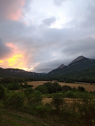

Los charrines

Conocidos popularmente como “Los Charrines”, desde el corazón de la Sierra de Izkiz, al pié de los montes Soila y La Muela donde se encuentra el Concejo de Bujanda, estamos comprometidos con la defensa de nuestras costumbres y tradiciones culinarias y gastronómicas, así como de los productos que en ella se emplean.